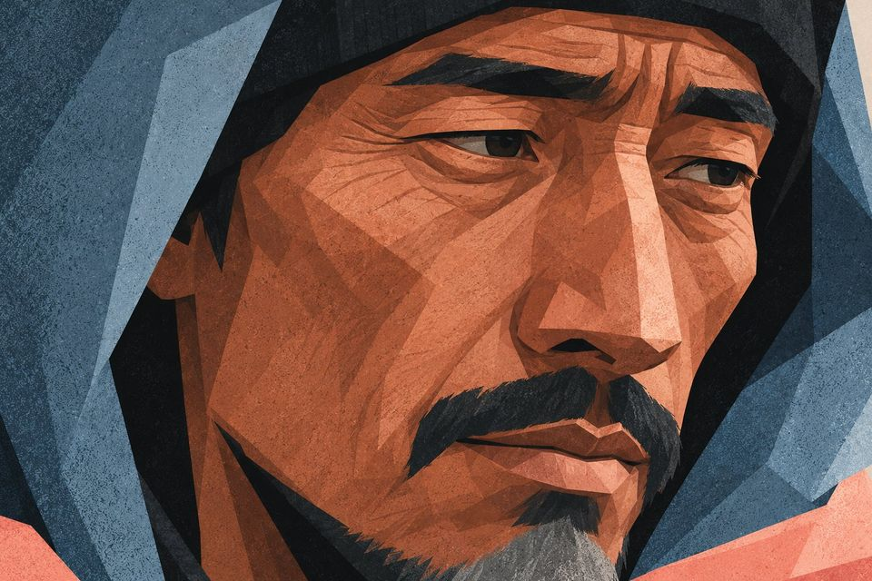
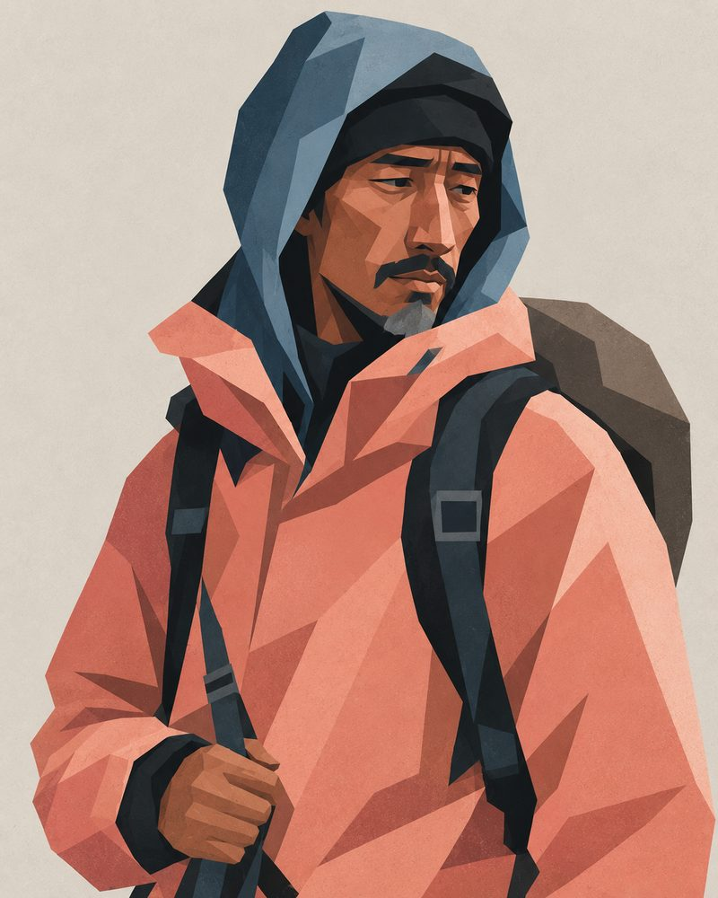
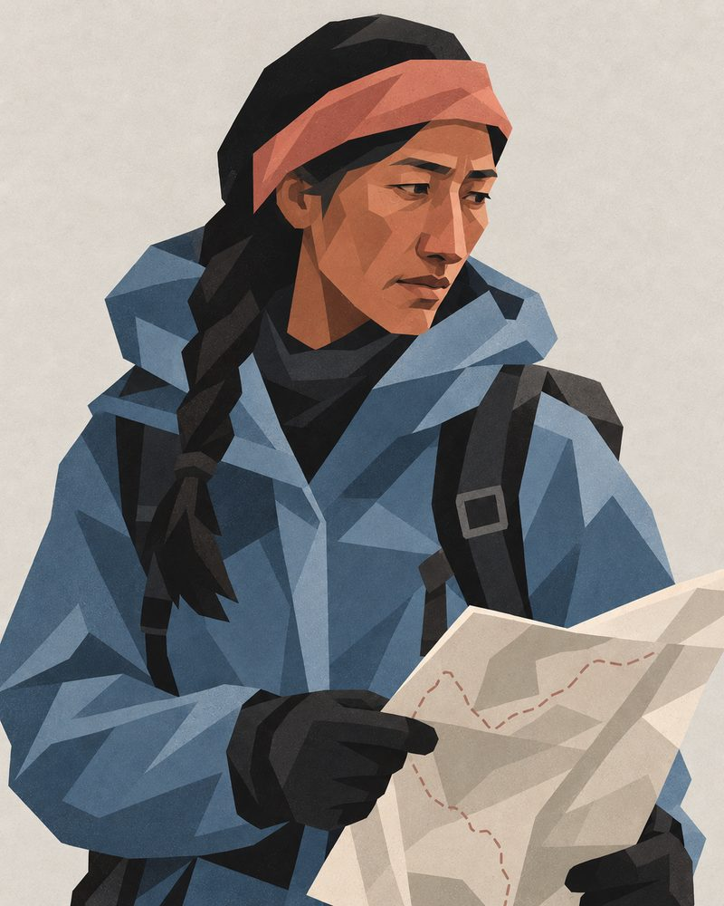
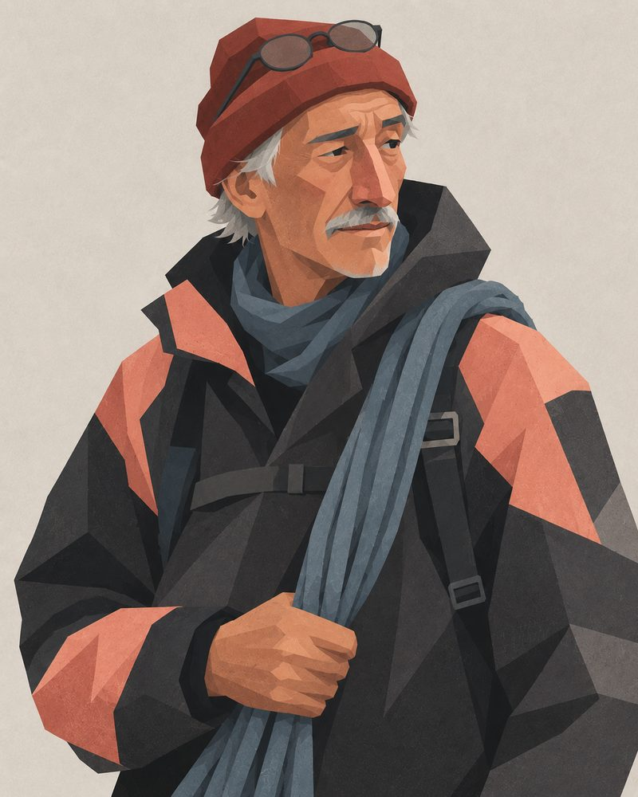
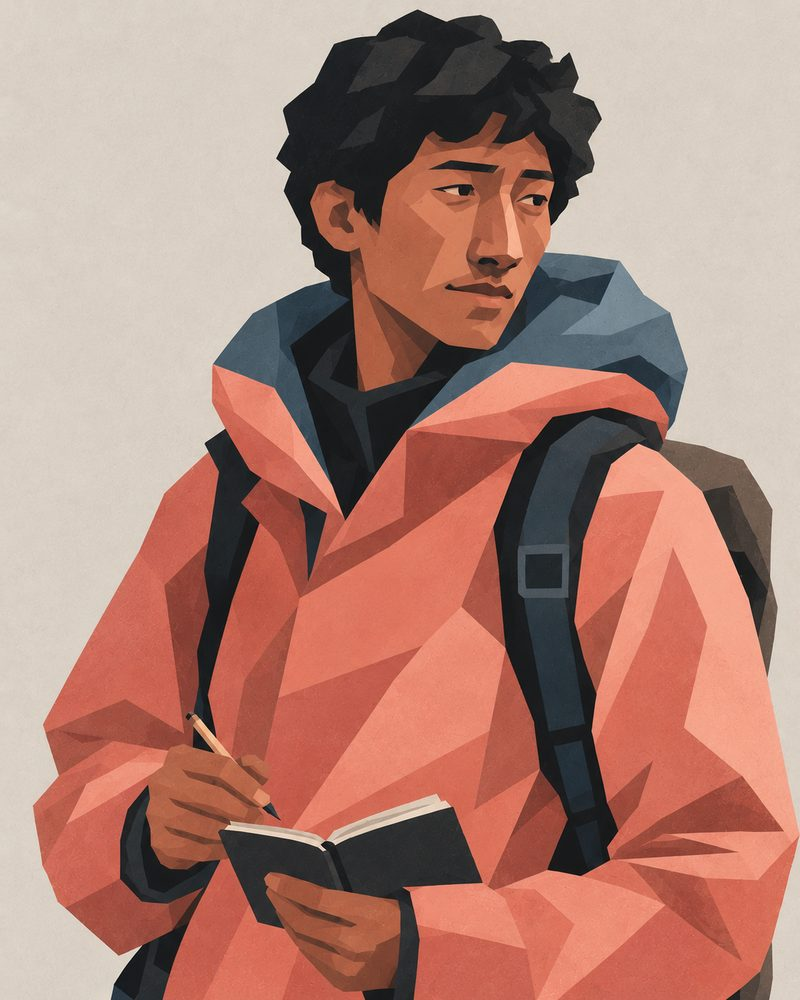
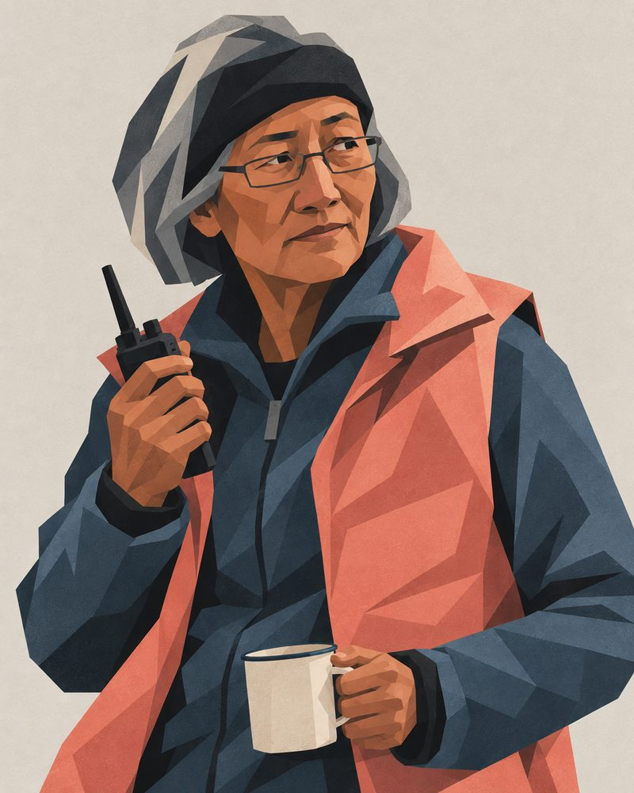
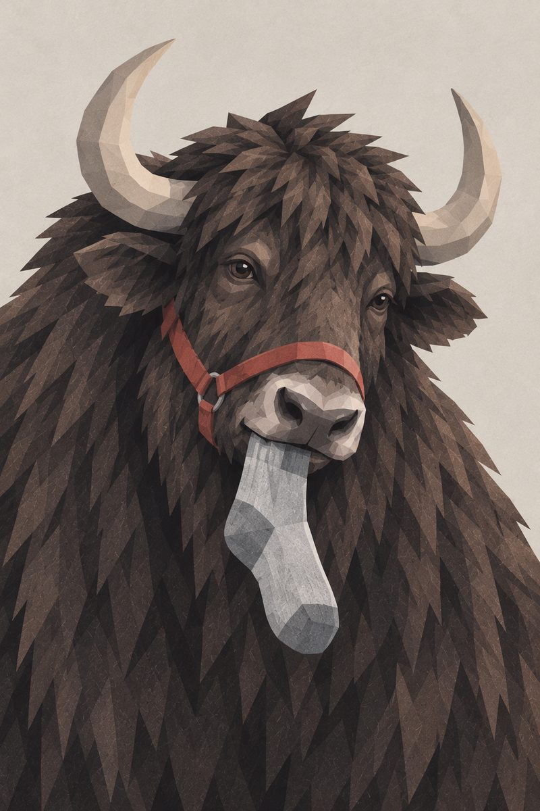

Tense game
The Climb
Climb the mountain with Tensing and the team. Each camp is one tense, and every right answer takes you higher.

The team
Tensing, the guide
- I'm Tensing, your guide. Thirteen camps to the top, and one tense at each camp.
- Every line the team says has a gap. Fill it, and we climb.
- Miss one, and the rope holds: you read why, and that line comes back before we leave the camp.

Tensingthe guide
Myrathe planner
Ottothe old hand
Samfirst big climb
Navyabase camp radio

And Momo, the yak at base camp.Choose a camp
The way up has no locks: start at whichever camp you need.